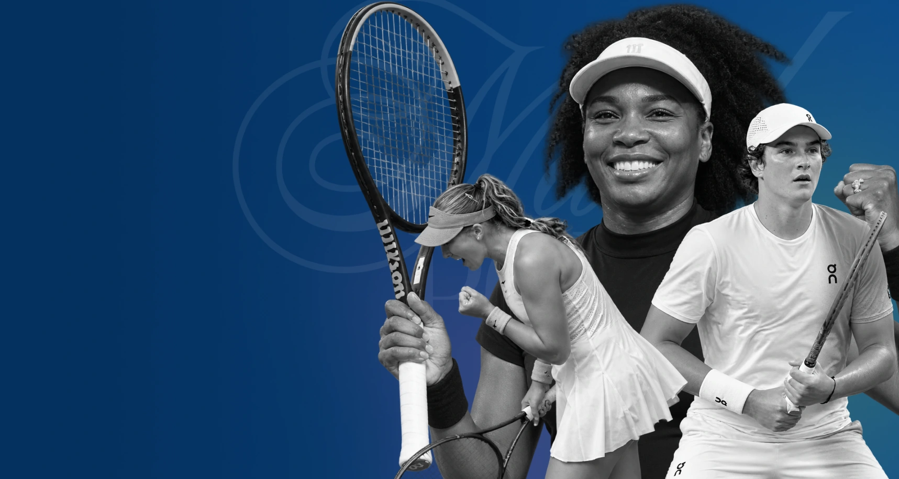

Escopo mapeadoTCC–038
38telasdocumentadas
Protótipo navegávelAtleta × Treinador × Instituição

TDS2 · Projeto em desenvolvimento · 2026O projeto reúne levantamento do problema, definição de requisitos, arquitetura de informação, regras de negócio e prototipação de uma solução digital.
Investigar a fragmentação do acesso a oportunidades e dos processos de avaliação no esporte.
Trinta e oito telas, múltiplos perfis, regras de segurança e fluxos completos já documentados.
Uma experiência navegável para demonstrar as principais jornadas e validar a proposta do TCC.
O protótipo materializa a arquitetura do projeto e conecta acesso, perfis, oportunidades, candidaturas, avaliações e acompanhamento em jornadas coerentes.
Move Sports · São Paulo, SP
Inscrição + transporteEsta interface representa uma das jornadas documentadas para o protótipo.
Ver a landing page ↗Definição dos perfis, necessidades, critérios, fluxos e requisitos de segurança.
Organização das jornadas do atleta, treinador, instituição e administrador.
Implementação progressiva dos fluxos prioritários definidos para a primeira entrega.